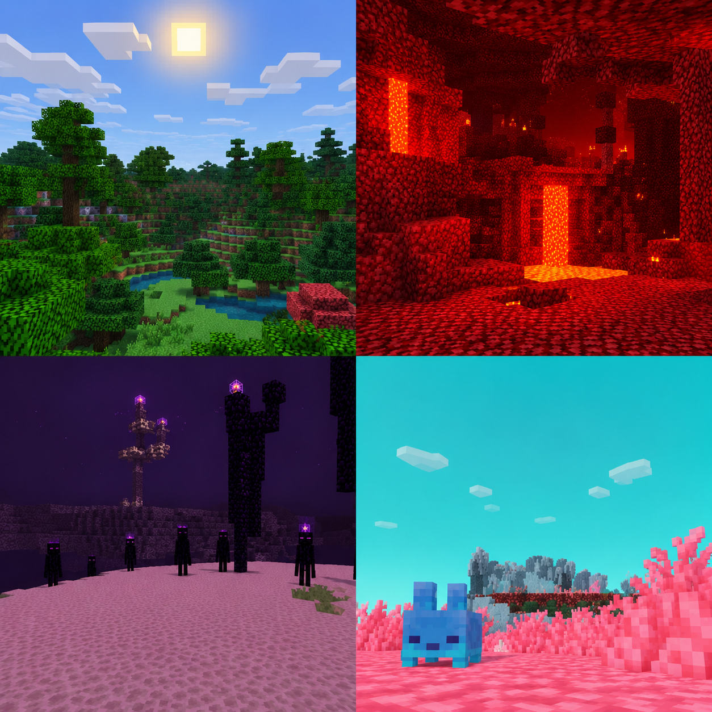
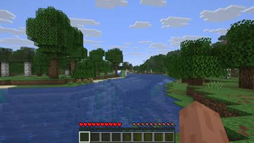

O overworld (mundo superior) e o Nether (inferno) estão des da beta do Minecraft a primeira forma do Nether era escolhendo logo em criar o mundo, um ano depois foi implementado um bloco que levava o jogador a um espaço com os mobs e o bloco dele e por fim hoje em dia ele é acessado por um porta criado apartir de 10 obsidianas no mundo superior, o The End adicionado na 1.9 em 2011 támbem adicionando o Ender Dragon o boss final do game epor fim a The Sift sera adicionada em algum dia em 2027.
No Minecraft já existiram mais de 46 estruturas mas hoje só possui cerca de 27 delas, a maioria sendo no Overworld, e as demais no Nether e no The End, algumas dando lots raros outras apenas para dar uma adição ao bioma, elas dão um propósito para os jogadores para exporarem e se aventurar entre os diverçõs biomas por todas as dimensões.

existem 3 modos de jogo o sobrevivência, criativo e hard core (modo dificil) esses modos de jogo servem para dar a liberdade para jogador para ele poder jogar tranquilamente no modo sobrevivencia ou enfrentar as dificuldades do hard core onde se morreu o mundo é deletado ou simplesmente usar sua criatividade no modo criativo e existe as dificuldades: pacífica onde os mobs hostils não aparecem e os mobs neutros não ficam bravo com você e não fica com fome, modo facil onde os mobs hostils já aparecem mas dão dano reduzido, o normal que é normal, e o difícil que vc pode morrer de fome e os zumbis quebram porta além de darem um pouco mais de dano e a chance de aparecerem de armadura é um pouco mais elevada